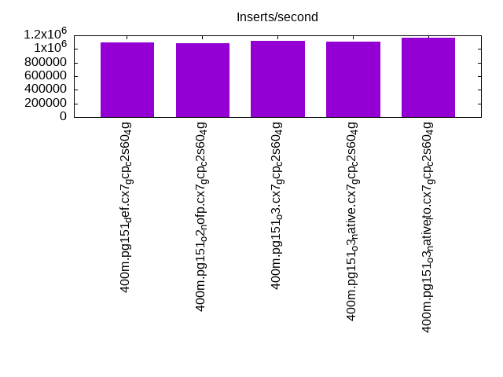
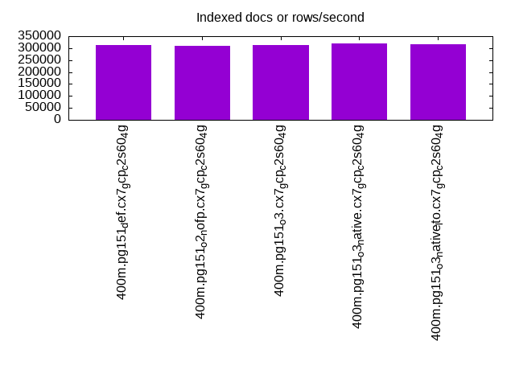
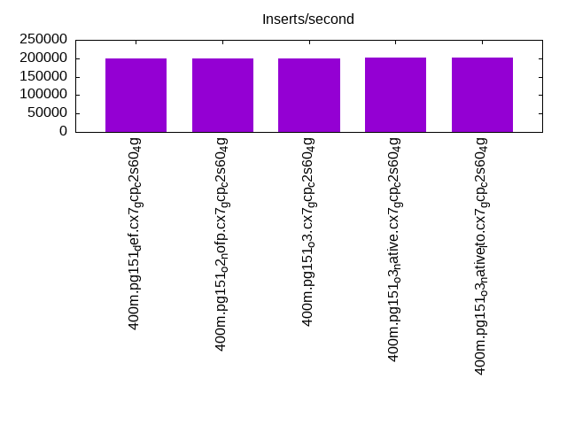
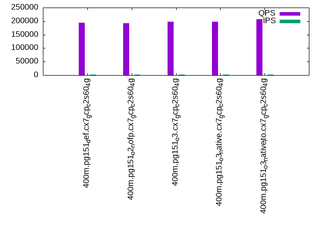
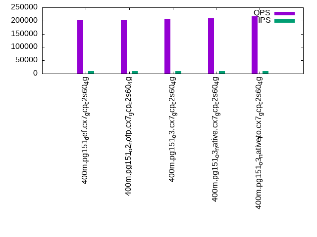
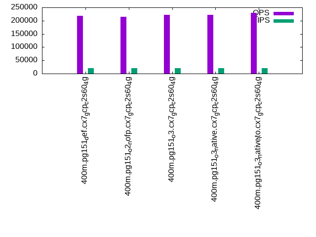

This is a report for the insert benchmark with 400M docs and 20 client(s). It is generated by scripts (bash, awk, sed) and Tufte might not be impressed. An overview of the insert benchmark is here and a short update is here. Below, by DBMS, I mean DBMS+version.config. An example is my8020.c10b40 where my means MySQL, 8020 is version 8.0.20 and c10b40 is the name for the configuration file.
The test server is c2-standard-60 from GCP with 30 cores, hyperthreads disabled, 240G RAM and 3T of NVMe (XFS with RAID0 over 8 devices). The benchmark was run with 20 clients and there were 1 or 2 connections per client (1 for queries, 1 for inserts). It uses 1 table. It loads 400M rows without secondary indexes, creates secondary indexes, loads another 400M rows per table then does 3 read+write tests for one hour each that do queries as fast as possible with 100, 500 and then 1000 writes/second/client concurrent with the queries. The database is cached by the OS but not by Postgres. Clients and the DBMS share one server. The per-database configs are in the per-database subdirectories here.
The tested DBMS are:
The numbers are inserts/s for l.i0 and l.i1, indexed docs (or rows) /s for l.x and queries/s for q*.2. The values are the average rate over the entire test for inserts (IPS) and queries (QPS). The range of values for IPS and QPS is split into 3 parts: bottom 25%, middle 50%, top 25%. Values in the bottom 25% have a red background, values in the top 25% have a green background and values in the middle have no color. A gray background is used for values that can be ignored because the DBMS did not sustain the target insert rate. Red backgrounds are not used when the minimum value is within 80% of the max value.
| dbms | l.i0 | l.x | l.i1 | q100.1 | q500.1 | q1000.1 |
|---|---|---|---|---|---|---|
| 400m.pg151_def.cx7_gcp_c2s60_4g | 1095890 | 311604 | 199104 | 194955 | 203528 | 217935 |
| 400m.pg151_o2_nofp.cx7_gcp_c2s60_4g | 1081081 | 309435 | 199005 | 191325 | 201561 | 214672 |
| 400m.pg151_o3.cx7_gcp_c2s60_4g | 1120448 | 311362 | 199700 | 198333 | 207861 | 221283 |
| 400m.pg151_o3_native.cx7_gcp_c2s60_4g | 1101928 | 318805 | 201207 | 198610 | 208185 | 221331 |
| 400m.pg151_o3_native_lto.cx7_gcp_c2s60_4g | 1162791 | 316535 | 202224 | 206718 | 216467 | 230002 |
This table has relative throughput, throughput for the DBMS relative to the DBMS in the first line, using the absolute throughput from the previous table.
| dbms | l.i0 | l.x | l.i1 | q100.1 | q500.1 | q1000.1 |
|---|---|---|---|---|---|---|
| 400m.pg151_def.cx7_gcp_c2s60_4g | 1.00 | 1.00 | 1.00 | 1.00 | 1.00 | 1.00 |
| 400m.pg151_o2_nofp.cx7_gcp_c2s60_4g | 0.99 | 0.99 | 1.00 | 0.98 | 0.99 | 0.99 |
| 400m.pg151_o3.cx7_gcp_c2s60_4g | 1.02 | 1.00 | 1.00 | 1.02 | 1.02 | 1.02 |
| 400m.pg151_o3_native.cx7_gcp_c2s60_4g | 1.01 | 1.02 | 1.01 | 1.02 | 1.02 | 1.02 |
| 400m.pg151_o3_native_lto.cx7_gcp_c2s60_4g | 1.06 | 1.02 | 1.02 | 1.06 | 1.06 | 1.06 |
This lists the average rate of inserts/s for the tests that do inserts concurrent with queries. For such tests the query rate is listed in the table above. The read+write tests are setup so that the insert rate should match the target rate every second. Cells that are not at least 95% of the target have a red background to indicate a failure to satisfy the target.
| dbms | q100.1 | q500.1 | q1000.1 |
|---|---|---|---|
| pg151_def.cx7_gcp_c2s60_4g | 1976 | 9885 | 19769 |
| pg151_o2_nofp.cx7_gcp_c2s60_4g | 1976 | 9885 | 19769 |
| pg151_o3.cx7_gcp_c2s60_4g | 1976 | 9885 | 19769 |
| pg151_o3_native.cx7_gcp_c2s60_4g | 1976 | 9885 | 19780 |
| pg151_o3_native_lto.cx7_gcp_c2s60_4g | 1976 | 9885 | 19769 |
| target | 2000 | 10000 | 20000 |
l.i0: load without secondary indexes. Graphs for performance per 1-second interval are here.
Average throughput:
Insert response time histogram: each cell has the percentage of responses that take <= the time in the header and max is the max response time in seconds. For the max column values in the top 25% of the range have a red background and in the bottom 25% of the range have a green background. The red background is not used when the min value is within 80% of the max value.
| dbms | 256us | 1ms | 4ms | 16ms | 64ms | 256ms | 1s | 4s | 16s | gt | max |
|---|---|---|---|---|---|---|---|---|---|---|---|
| pg151_def.cx7_gcp_c2s60_4g | 20.808 | 76.340 | 2.796 | 0.018 | 0.030 | 0.009 | 0.571 | ||||
| pg151_o2_nofp.cx7_gcp_c2s60_4g | 18.086 | 79.084 | 2.774 | 0.015 | 0.029 | 0.011 | 0.001 | 1.007 | |||
| pg151_o3.cx7_gcp_c2s60_4g | 23.465 | 73.936 | 2.537 | 0.021 | 0.031 | 0.010 | 0.468 | ||||
| pg151_o3_native.cx7_gcp_c2s60_4g | 22.885 | 74.239 | 2.813 | 0.024 | 0.030 | 0.009 | 0.661 | ||||
| pg151_o3_native_lto.cx7_gcp_c2s60_4g | 31.368 | 66.117 | 2.463 | 0.019 | 0.025 | 0.008 | 0.366 |
Performance metrics for the DBMS listed above. Some are normalized by throughput, others are not. Legend for results is here.
ips qps rps rmbps wps wmbps rpq rkbpq wpi wkbpi csps cpups cspq cpupq dbgb1 dbgb2 rss maxop p50 p99 tag 1095890 0 0 0.0 2202.3 464.8 0.000 0.000 0.002 0.434 318552 57.9 0.291 16 43.0 113.6 NA 0.571 60532 23784 400m.pg151_def.cx7_gcp_c2s60_4g 1081081 0 0 0.0 2176.1 461.7 0.000 0.000 0.002 0.437 299663 57.9 0.277 16 43.0 113.7 NA 1.007 59734 14983 400m.pg151_o2_nofp.cx7_gcp_c2s60_4g 1120448 0 0 0.0 2273.8 469.9 0.000 0.000 0.002 0.429 304714 58.4 0.272 16 43.0 112.4 NA 0.468 61758 24073 400m.pg151_o3.cx7_gcp_c2s60_4g 1101928 0 0 0.0 2266.5 462.9 0.000 0.000 0.002 0.430 320179 57.8 0.291 16 43.0 112.6 NA 0.661 60833 12791 400m.pg151_o3_native.cx7_gcp_c2s60_4g 1162791 0 0 0.0 2311.7 463.6 0.000 0.000 0.002 0.408 324905 58.7 0.279 15 43.0 112.4 0.0 0.366 63827 13885 400m.pg151_o3_native_lto.cx7_gcp_c2s60_4g
l.x: create secondary indexes.
Average throughput:
Performance metrics for the DBMS listed above. Some are normalized by throughput, others are not. Legend for results is here.
ips qps rps rmbps wps wmbps rpq rkbpq wpi wkbpi csps cpups cspq cpupq dbgb1 dbgb2 rss maxop p50 p99 tag 311604 0 0 0.0 521.1 119.0 0.000 0.000 0.002 0.391 2079 3.1 0.007 3 78.3 163.0 0.0 0.002 NA NA 400m.pg151_def.cx7_gcp_c2s60_4g 309435 0 0 0.0 514.7 121.3 0.000 0.000 0.002 0.401 1953 3.1 0.006 3 78.3 162.4 0.0 0.002 NA NA 400m.pg151_o2_nofp.cx7_gcp_c2s60_4g 311362 0 0 0.0 556.7 134.3 0.000 0.000 0.002 0.442 2333 3.1 0.007 3 78.3 163.6 0.0 0.002 NA NA 400m.pg151_o3.cx7_gcp_c2s60_4g 318805 0 0 0.0 554.8 124.7 0.000 0.000 0.002 0.400 2228 3.2 0.007 3 78.3 163.3 0.0 0.002 NA NA 400m.pg151_o3_native.cx7_gcp_c2s60_4g 316535 0 0 0.0 561.7 128.6 0.000 0.000 0.002 0.416 2088 3.2 0.007 3 78.3 164.9 0.0 0.002 NA NA 400m.pg151_o3_native_lto.cx7_gcp_c2s60_4g
l.i1: continue load after secondary indexes created. Graphs for performance per 1-second interval are here.
Average throughput:
Insert response time histogram: each cell has the percentage of responses that take <= the time in the header and max is the max response time in seconds. For the max column values in the top 25% of the range have a red background and in the bottom 25% of the range have a green background. The red background is not used when the min value is within 80% of the max value.
| dbms | 256us | 1ms | 4ms | 16ms | 64ms | 256ms | 1s | 4s | 16s | gt | max |
|---|---|---|---|---|---|---|---|---|---|---|---|
| pg151_def.cx7_gcp_c2s60_4g | 85.095 | 11.965 | 2.224 | 0.690 | 0.026 | 0.629 | |||||
| pg151_o2_nofp.cx7_gcp_c2s60_4g | 84.665 | 12.436 | 2.226 | 0.642 | 0.030 | 0.935 | |||||
| pg151_o3.cx7_gcp_c2s60_4g | 85.499 | 11.546 | 2.243 | 0.687 | 0.025 | nonzero | 1.268 | ||||
| pg151_o3_native.cx7_gcp_c2s60_4g | 85.870 | 11.070 | 2.360 | 0.673 | 0.027 | 0.837 | |||||
| pg151_o3_native_lto.cx7_gcp_c2s60_4g | 87.176 | 9.691 | 2.396 | 0.711 | 0.026 | 0.648 |
Performance metrics for the DBMS listed above. Some are normalized by throughput, others are not. Legend for results is here.
ips qps rps rmbps wps wmbps rpq rkbpq wpi wkbpi csps cpups cspq cpupq dbgb1 dbgb2 rss maxop p50 p99 tag 199104 0 0 0.0 41295.9 1284.5 0.000 0.000 0.207 6.606 180412 44.1 0.906 66 170.2 288.9 NA 0.629 10688 1299 400m.pg151_def.cx7_gcp_c2s60_4g 199005 0 0 0.0 41177.3 1283.0 0.000 0.000 0.207 6.602 180064 44.7 0.905 67 170.2 289.9 NA 0.935 10688 1348 400m.pg151_o2_nofp.cx7_gcp_c2s60_4g 199700 0 0 0.0 41224.2 1280.6 0.000 0.000 0.206 6.567 182845 44.3 0.916 67 170.2 286.9 NA 1.268 10738 1049 400m.pg151_o3.cx7_gcp_c2s60_4g 201207 0 0 0.0 40829.0 1273.9 0.000 0.000 0.203 6.483 189830 43.6 0.943 65 170.2 286.4 NA 0.837 10893 1349 400m.pg151_o3_native.cx7_gcp_c2s60_4g 202224 0 0 0.0 40306.4 1272.0 0.000 0.000 0.199 6.441 191698 43.0 0.948 64 170.2 287.1 NA 0.648 10838 1199 400m.pg151_o3_native_lto.cx7_gcp_c2s60_4g
q100.1: range queries with 100 insert/s per client. Graphs for performance per 1-second interval are here.
Average throughput:
Query response time histogram: each cell has the percentage of responses that take <= the time in the header and max is the max response time in seconds. For max values in the top 25% of the range have a red background and in the bottom 25% of the range have a green background. The red background is not used when the min value is within 80% of the max value.
| dbms | 256us | 1ms | 4ms | 16ms | 64ms | 256ms | 1s | 4s | 16s | gt | max |
|---|---|---|---|---|---|---|---|---|---|---|---|
| pg151_def.cx7_gcp_c2s60_4g | 99.973 | 0.020 | 0.006 | 0.001 | nonzero | 0.024 | |||||
| pg151_o2_nofp.cx7_gcp_c2s60_4g | 99.970 | 0.023 | 0.006 | 0.001 | nonzero | 0.021 | |||||
| pg151_o3.cx7_gcp_c2s60_4g | 99.976 | 0.017 | 0.006 | 0.001 | nonzero | 0.023 | |||||
| pg151_o3_native.cx7_gcp_c2s60_4g | 99.975 | 0.018 | 0.006 | 0.001 | nonzero | 0.042 | |||||
| pg151_o3_native_lto.cx7_gcp_c2s60_4g | 99.978 | 0.015 | 0.006 | 0.001 | nonzero | 0.024 |
Insert response time histogram: each cell has the percentage of responses that take <= the time in the header and max is the max response time in seconds. For max values in the top 25% of the range have a red background and in the bottom 25% of the range have a green background. The red background is not used when the min value is within 80% of the max value.
| dbms | 256us | 1ms | 4ms | 16ms | 64ms | 256ms | 1s | 4s | 16s | gt | max |
|---|---|---|---|---|---|---|---|---|---|---|---|
| pg151_def.cx7_gcp_c2s60_4g | 97.746 | 2.104 | 0.129 | 0.021 | 0.160 | ||||||
| pg151_o2_nofp.cx7_gcp_c2s60_4g | 97.801 | 2.033 | 0.129 | 0.018 | 0.018 | 0.312 | |||||
| pg151_o3.cx7_gcp_c2s60_4g | 97.578 | 2.242 | 0.181 | 0.056 | |||||||
| pg151_o3_native.cx7_gcp_c2s60_4g | 96.685 | 2.796 | 0.517 | 0.003 | 0.065 | ||||||
| pg151_o3_native_lto.cx7_gcp_c2s60_4g | 98.401 | 1.499 | 0.088 | 0.001 | 0.011 | 0.318 |
Performance metrics for the DBMS listed above. Some are normalized by throughput, others are not. Legend for results is here.
ips qps rps rmbps wps wmbps rpq rkbpq wpi wkbpi csps cpups cspq cpupq dbgb1 dbgb2 rss maxop p50 p99 tag 1976 194955 3 0.0 4000.3 50.5 0.000 0.000 2.025 26.168 696682 62.7 3.574 96 171.1 249.6 0.0 0.024 9752 9414 400m.pg151_def.cx7_gcp_c2s60_4g 1976 191325 3 0.0 4084.1 51.8 0.000 0.000 2.067 26.845 685137 63.0 3.581 99 171.1 251.1 0.0 0.021 9573 9274 400m.pg151_o2_nofp.cx7_gcp_c2s60_4g 1976 198333 1 0.0 4013.6 50.8 0.000 0.000 2.031 26.307 708456 62.5 3.572 95 171.1 252.8 0.0 0.023 9861 9546 400m.pg151_o3.cx7_gcp_c2s60_4g 1976 198610 3 0.0 4021.2 51.6 0.000 0.000 2.035 26.724 709758 62.5 3.574 94 171.1 264.1 0.0 0.042 9909 9573 400m.pg151_o3_native.cx7_gcp_c2s60_4g 1976 206718 2 0.0 4032.1 52.1 0.000 0.000 2.041 27.013 737779 62.5 3.569 91 171.1 267.8 0.0 0.024 10197 9866 400m.pg151_o3_native_lto.cx7_gcp_c2s60_4g
q500.1: range queries with 500 insert/s per client. Graphs for performance per 1-second interval are here.
Average throughput:
Query response time histogram: each cell has the percentage of responses that take <= the time in the header and max is the max response time in seconds. For max values in the top 25% of the range have a red background and in the bottom 25% of the range have a green background. The red background is not used when the min value is within 80% of the max value.
| dbms | 256us | 1ms | 4ms | 16ms | 64ms | 256ms | 1s | 4s | 16s | gt | max |
|---|---|---|---|---|---|---|---|---|---|---|---|
| pg151_def.cx7_gcp_c2s60_4g | 99.879 | 0.087 | 0.031 | 0.002 | nonzero | 0.027 | |||||
| pg151_o2_nofp.cx7_gcp_c2s60_4g | 99.870 | 0.095 | 0.033 | 0.002 | nonzero | 0.023 | |||||
| pg151_o3.cx7_gcp_c2s60_4g | 99.881 | 0.086 | 0.031 | 0.002 | nonzero | 0.028 | |||||
| pg151_o3_native.cx7_gcp_c2s60_4g | 99.880 | 0.087 | 0.031 | 0.002 | nonzero | nonzero | 0.119 | ||||
| pg151_o3_native_lto.cx7_gcp_c2s60_4g | 99.889 | 0.080 | 0.029 | 0.002 | nonzero | 0.027 |
Insert response time histogram: each cell has the percentage of responses that take <= the time in the header and max is the max response time in seconds. For max values in the top 25% of the range have a red background and in the bottom 25% of the range have a green background. The red background is not used when the min value is within 80% of the max value.
| dbms | 256us | 1ms | 4ms | 16ms | 64ms | 256ms | 1s | 4s | 16s | gt | max |
|---|---|---|---|---|---|---|---|---|---|---|---|
| pg151_def.cx7_gcp_c2s60_4g | 45.869 | 40.045 | 14.016 | 0.071 | 0.145 | ||||||
| pg151_o2_nofp.cx7_gcp_c2s60_4g | 44.721 | 41.182 | 14.042 | 0.055 | 0.122 | ||||||
| pg151_o3.cx7_gcp_c2s60_4g | 45.136 | 41.237 | 13.573 | 0.054 | 0.154 | ||||||
| pg151_o3_native.cx7_gcp_c2s60_4g | 45.612 | 40.340 | 13.980 | 0.069 | 0.162 | ||||||
| pg151_o3_native_lto.cx7_gcp_c2s60_4g | 44.827 | 40.126 | 14.984 | 0.063 | 0.251 |
Performance metrics for the DBMS listed above. Some are normalized by throughput, others are not. Legend for results is here.
ips qps rps rmbps wps wmbps rpq rkbpq wpi wkbpi csps cpups cspq cpupq dbgb1 dbgb2 rss maxop p50 p99 tag 9885 203528 0 0.0 19508.2 221.7 0.000 0.000 1.974 22.966 689849 64.6 3.389 95 176.0 241.3 0.0 0.027 10053 9302 400m.pg151_def.cx7_gcp_c2s60_4g 9885 201561 0 0.0 19513.1 222.2 0.000 0.000 1.974 23.018 682466 64.7 3.386 96 176.0 242.0 0.0 0.023 9877 9101 400m.pg151_o2_nofp.cx7_gcp_c2s60_4g 9885 207861 0 0.0 19515.0 221.4 0.000 0.000 1.974 22.936 704115 64.3 3.387 93 176.0 242.8 0.0 0.028 10213 9477 400m.pg151_o3.cx7_gcp_c2s60_4g 9885 208185 0 0.0 19516.8 221.6 0.000 0.000 1.974 22.956 705618 64.3 3.389 93 176.0 244.0 0.0 0.119 10277 9477 400m.pg151_o3_native.cx7_gcp_c2s60_4g 9885 216467 0 0.0 19518.5 222.8 0.000 0.000 1.975 23.078 731604 64.3 3.380 89 176.0 247.4 0.0 0.027 10532 9738 400m.pg151_o3_native_lto.cx7_gcp_c2s60_4g
q1000.1: range queries with 1000 insert/s per client. Graphs for performance per 1-second interval are here.
Average throughput:
Query response time histogram: each cell has the percentage of responses that take <= the time in the header and max is the max response time in seconds. For max values in the top 25% of the range have a red background and in the bottom 25% of the range have a green background. The red background is not used when the min value is within 80% of the max value.
| dbms | 256us | 1ms | 4ms | 16ms | 64ms | 256ms | 1s | 4s | 16s | gt | max |
|---|---|---|---|---|---|---|---|---|---|---|---|
| pg151_def.cx7_gcp_c2s60_4g | 99.778 | 0.172 | 0.048 | 0.003 | nonzero | nonzero | 0.145 | ||||
| pg151_o2_nofp.cx7_gcp_c2s60_4g | 99.757 | 0.189 | 0.051 | 0.003 | nonzero | nonzero | 0.071 | ||||
| pg151_o3.cx7_gcp_c2s60_4g | 99.776 | 0.174 | 0.047 | 0.003 | nonzero | 0.040 | |||||
| pg151_o3_native.cx7_gcp_c2s60_4g | 99.773 | 0.177 | 0.046 | 0.003 | nonzero | nonzero | 0.066 | ||||
| pg151_o3_native_lto.cx7_gcp_c2s60_4g | 99.783 | 0.169 | 0.045 | 0.003 | nonzero | 0.050 |
Insert response time histogram: each cell has the percentage of responses that take <= the time in the header and max is the max response time in seconds. For max values in the top 25% of the range have a red background and in the bottom 25% of the range have a green background. The red background is not used when the min value is within 80% of the max value.
| dbms | 256us | 1ms | 4ms | 16ms | 64ms | 256ms | 1s | 4s | 16s | gt | max |
|---|---|---|---|---|---|---|---|---|---|---|---|
| pg151_def.cx7_gcp_c2s60_4g | 44.407 | 46.319 | 9.069 | 0.203 | 0.003 | 0.316 | |||||
| pg151_o2_nofp.cx7_gcp_c2s60_4g | 43.125 | 47.552 | 9.094 | 0.229 | nonzero | 0.293 | |||||
| pg151_o3.cx7_gcp_c2s60_4g | 43.153 | 47.321 | 9.308 | 0.216 | 0.002 | 0.407 | |||||
| pg151_o3_native.cx7_gcp_c2s60_4g | 44.494 | 46.500 | 8.816 | 0.189 | 0.001 | 0.370 | |||||
| pg151_o3_native_lto.cx7_gcp_c2s60_4g | 44.460 | 46.598 | 8.746 | 0.195 | 0.217 |
Performance metrics for the DBMS listed above. Some are normalized by throughput, others are not. Legend for results is here.
ips qps rps rmbps wps wmbps rpq rkbpq wpi wkbpi csps cpups cspq cpupq dbgb1 dbgb2 rss maxop p50 p99 tag 19769 217935 0 0.0 38128.6 397.8 0.000 0.000 1.929 20.606 689255 66.9 3.163 92 189.4 261.4 0.0 0.145 10661 9357 400m.pg151_def.cx7_gcp_c2s60_4g 19769 214672 0 0.0 38089.5 397.5 0.000 0.000 1.927 20.587 680269 66.7 3.169 93 189.4 261.4 0.0 0.071 10500 9254 400m.pg151_o2_nofp.cx7_gcp_c2s60_4g 19769 221283 0 0.0 38114.9 397.1 0.000 0.000 1.928 20.571 700496 66.7 3.166 90 189.4 261.4 0.0 0.040 10916 9637 400m.pg151_o3.cx7_gcp_c2s60_4g 19780 221331 0 0.0 38210.9 396.6 0.000 0.000 1.932 20.531 702013 66.7 3.172 90 189.4 261.4 0.0 0.066 10932 9637 400m.pg151_o3_native.cx7_gcp_c2s60_4g 19769 230002 0 0.0 38217.0 393.9 0.000 0.000 1.933 20.402 730673 66.4 3.177 87 189.4 261.4 0.0 0.050 11268 9861 400m.pg151_o3_native_lto.cx7_gcp_c2s60_4g
l.i0: load without secondary indexes
Performance metrics for all DBMS, not just the ones listed above. Some are normalized by throughput, others are not. Legend for results is here.
ips qps rps rmbps wps wmbps rpq rkbpq wpi wkbpi csps cpups cspq cpupq dbgb1 dbgb2 rss maxop p50 p99 tag 1095890 0 0 0.0 2202.3 464.8 0.000 0.000 0.002 0.434 318552 57.9 0.291 16 43.0 113.6 NA 0.571 60532 23784 400m.pg151_def.cx7_gcp_c2s60_4g 1081081 0 0 0.0 2176.1 461.7 0.000 0.000 0.002 0.437 299663 57.9 0.277 16 43.0 113.7 NA 1.007 59734 14983 400m.pg151_o2_nofp.cx7_gcp_c2s60_4g 1120448 0 0 0.0 2273.8 469.9 0.000 0.000 0.002 0.429 304714 58.4 0.272 16 43.0 112.4 NA 0.468 61758 24073 400m.pg151_o3.cx7_gcp_c2s60_4g 1101928 0 0 0.0 2266.5 462.9 0.000 0.000 0.002 0.430 320179 57.8 0.291 16 43.0 112.6 NA 0.661 60833 12791 400m.pg151_o3_native.cx7_gcp_c2s60_4g 1162791 0 0 0.0 2311.7 463.6 0.000 0.000 0.002 0.408 324905 58.7 0.279 15 43.0 112.4 0.0 0.366 63827 13885 400m.pg151_o3_native_lto.cx7_gcp_c2s60_4g
l.x: create secondary indexes
Performance metrics for all DBMS, not just the ones listed above. Some are normalized by throughput, others are not. Legend for results is here.
ips qps rps rmbps wps wmbps rpq rkbpq wpi wkbpi csps cpups cspq cpupq dbgb1 dbgb2 rss maxop p50 p99 tag 311604 0 0 0.0 521.1 119.0 0.000 0.000 0.002 0.391 2079 3.1 0.007 3 78.3 163.0 0.0 0.002 NA NA 400m.pg151_def.cx7_gcp_c2s60_4g 309435 0 0 0.0 514.7 121.3 0.000 0.000 0.002 0.401 1953 3.1 0.006 3 78.3 162.4 0.0 0.002 NA NA 400m.pg151_o2_nofp.cx7_gcp_c2s60_4g 311362 0 0 0.0 556.7 134.3 0.000 0.000 0.002 0.442 2333 3.1 0.007 3 78.3 163.6 0.0 0.002 NA NA 400m.pg151_o3.cx7_gcp_c2s60_4g 318805 0 0 0.0 554.8 124.7 0.000 0.000 0.002 0.400 2228 3.2 0.007 3 78.3 163.3 0.0 0.002 NA NA 400m.pg151_o3_native.cx7_gcp_c2s60_4g 316535 0 0 0.0 561.7 128.6 0.000 0.000 0.002 0.416 2088 3.2 0.007 3 78.3 164.9 0.0 0.002 NA NA 400m.pg151_o3_native_lto.cx7_gcp_c2s60_4g
l.i1: continue load after secondary indexes created
Performance metrics for all DBMS, not just the ones listed above. Some are normalized by throughput, others are not. Legend for results is here.
ips qps rps rmbps wps wmbps rpq rkbpq wpi wkbpi csps cpups cspq cpupq dbgb1 dbgb2 rss maxop p50 p99 tag 199104 0 0 0.0 41295.9 1284.5 0.000 0.000 0.207 6.606 180412 44.1 0.906 66 170.2 288.9 NA 0.629 10688 1299 400m.pg151_def.cx7_gcp_c2s60_4g 199005 0 0 0.0 41177.3 1283.0 0.000 0.000 0.207 6.602 180064 44.7 0.905 67 170.2 289.9 NA 0.935 10688 1348 400m.pg151_o2_nofp.cx7_gcp_c2s60_4g 199700 0 0 0.0 41224.2 1280.6 0.000 0.000 0.206 6.567 182845 44.3 0.916 67 170.2 286.9 NA 1.268 10738 1049 400m.pg151_o3.cx7_gcp_c2s60_4g 201207 0 0 0.0 40829.0 1273.9 0.000 0.000 0.203 6.483 189830 43.6 0.943 65 170.2 286.4 NA 0.837 10893 1349 400m.pg151_o3_native.cx7_gcp_c2s60_4g 202224 0 0 0.0 40306.4 1272.0 0.000 0.000 0.199 6.441 191698 43.0 0.948 64 170.2 287.1 NA 0.648 10838 1199 400m.pg151_o3_native_lto.cx7_gcp_c2s60_4g
q100.1: range queries with 100 insert/s per client
Performance metrics for all DBMS, not just the ones listed above. Some are normalized by throughput, others are not. Legend for results is here.
ips qps rps rmbps wps wmbps rpq rkbpq wpi wkbpi csps cpups cspq cpupq dbgb1 dbgb2 rss maxop p50 p99 tag 1976 194955 3 0.0 4000.3 50.5 0.000 0.000 2.025 26.168 696682 62.7 3.574 96 171.1 249.6 0.0 0.024 9752 9414 400m.pg151_def.cx7_gcp_c2s60_4g 1976 191325 3 0.0 4084.1 51.8 0.000 0.000 2.067 26.845 685137 63.0 3.581 99 171.1 251.1 0.0 0.021 9573 9274 400m.pg151_o2_nofp.cx7_gcp_c2s60_4g 1976 198333 1 0.0 4013.6 50.8 0.000 0.000 2.031 26.307 708456 62.5 3.572 95 171.1 252.8 0.0 0.023 9861 9546 400m.pg151_o3.cx7_gcp_c2s60_4g 1976 198610 3 0.0 4021.2 51.6 0.000 0.000 2.035 26.724 709758 62.5 3.574 94 171.1 264.1 0.0 0.042 9909 9573 400m.pg151_o3_native.cx7_gcp_c2s60_4g 1976 206718 2 0.0 4032.1 52.1 0.000 0.000 2.041 27.013 737779 62.5 3.569 91 171.1 267.8 0.0 0.024 10197 9866 400m.pg151_o3_native_lto.cx7_gcp_c2s60_4g
q500.1: range queries with 500 insert/s per client
Performance metrics for all DBMS, not just the ones listed above. Some are normalized by throughput, others are not. Legend for results is here.
ips qps rps rmbps wps wmbps rpq rkbpq wpi wkbpi csps cpups cspq cpupq dbgb1 dbgb2 rss maxop p50 p99 tag 9885 203528 0 0.0 19508.2 221.7 0.000 0.000 1.974 22.966 689849 64.6 3.389 95 176.0 241.3 0.0 0.027 10053 9302 400m.pg151_def.cx7_gcp_c2s60_4g 9885 201561 0 0.0 19513.1 222.2 0.000 0.000 1.974 23.018 682466 64.7 3.386 96 176.0 242.0 0.0 0.023 9877 9101 400m.pg151_o2_nofp.cx7_gcp_c2s60_4g 9885 207861 0 0.0 19515.0 221.4 0.000 0.000 1.974 22.936 704115 64.3 3.387 93 176.0 242.8 0.0 0.028 10213 9477 400m.pg151_o3.cx7_gcp_c2s60_4g 9885 208185 0 0.0 19516.8 221.6 0.000 0.000 1.974 22.956 705618 64.3 3.389 93 176.0 244.0 0.0 0.119 10277 9477 400m.pg151_o3_native.cx7_gcp_c2s60_4g 9885 216467 0 0.0 19518.5 222.8 0.000 0.000 1.975 23.078 731604 64.3 3.380 89 176.0 247.4 0.0 0.027 10532 9738 400m.pg151_o3_native_lto.cx7_gcp_c2s60_4g
q1000.1: range queries with 1000 insert/s per client
Performance metrics for all DBMS, not just the ones listed above. Some are normalized by throughput, others are not. Legend for results is here.
ips qps rps rmbps wps wmbps rpq rkbpq wpi wkbpi csps cpups cspq cpupq dbgb1 dbgb2 rss maxop p50 p99 tag 19769 217935 0 0.0 38128.6 397.8 0.000 0.000 1.929 20.606 689255 66.9 3.163 92 189.4 261.4 0.0 0.145 10661 9357 400m.pg151_def.cx7_gcp_c2s60_4g 19769 214672 0 0.0 38089.5 397.5 0.000 0.000 1.927 20.587 680269 66.7 3.169 93 189.4 261.4 0.0 0.071 10500 9254 400m.pg151_o2_nofp.cx7_gcp_c2s60_4g 19769 221283 0 0.0 38114.9 397.1 0.000 0.000 1.928 20.571 700496 66.7 3.166 90 189.4 261.4 0.0 0.040 10916 9637 400m.pg151_o3.cx7_gcp_c2s60_4g 19780 221331 0 0.0 38210.9 396.6 0.000 0.000 1.932 20.531 702013 66.7 3.172 90 189.4 261.4 0.0 0.066 10932 9637 400m.pg151_o3_native.cx7_gcp_c2s60_4g 19769 230002 0 0.0 38217.0 393.9 0.000 0.000 1.933 20.402 730673 66.4 3.177 87 189.4 261.4 0.0 0.050 11268 9861 400m.pg151_o3_native_lto.cx7_gcp_c2s60_4g
Insert response time histogram
256us 1ms 4ms 16ms 64ms 256ms 1s 4s 16s gt max tag 0.000 20.808 76.340 2.796 0.018 0.030 0.009 0.000 0.000 0.000 0.571 pg151_def.cx7_gcp_c2s60_4g 0.000 18.086 79.084 2.774 0.015 0.029 0.011 0.001 0.000 0.000 1.007 pg151_o2_nofp.cx7_gcp_c2s60_4g 0.000 23.465 73.936 2.537 0.021 0.031 0.010 0.000 0.000 0.000 0.468 pg151_o3.cx7_gcp_c2s60_4g 0.000 22.885 74.239 2.813 0.024 0.030 0.009 0.000 0.000 0.000 0.661 pg151_o3_native.cx7_gcp_c2s60_4g 0.000 31.368 66.117 2.463 0.019 0.025 0.008 0.000 0.000 0.000 0.366 pg151_o3_native_lto.cx7_gcp_c2s60_4g
TODO - determine whether there is data for create index response time
Insert response time histogram
256us 1ms 4ms 16ms 64ms 256ms 1s 4s 16s gt max tag 0.000 0.000 85.095 11.965 2.224 0.690 0.026 0.000 0.000 0.000 0.629 pg151_def.cx7_gcp_c2s60_4g 0.000 0.000 84.665 12.436 2.226 0.642 0.030 0.000 0.000 0.000 0.935 pg151_o2_nofp.cx7_gcp_c2s60_4g 0.000 0.000 85.499 11.546 2.243 0.687 0.025 nonzero 0.000 0.000 1.268 pg151_o3.cx7_gcp_c2s60_4g 0.000 0.000 85.870 11.070 2.360 0.673 0.027 0.000 0.000 0.000 0.837 pg151_o3_native.cx7_gcp_c2s60_4g 0.000 0.000 87.176 9.691 2.396 0.711 0.026 0.000 0.000 0.000 0.648 pg151_o3_native_lto.cx7_gcp_c2s60_4g
Query response time histogram
256us 1ms 4ms 16ms 64ms 256ms 1s 4s 16s gt max tag 99.973 0.020 0.006 0.001 nonzero 0.000 0.000 0.000 0.000 0.000 0.024 pg151_def.cx7_gcp_c2s60_4g 99.970 0.023 0.006 0.001 nonzero 0.000 0.000 0.000 0.000 0.000 0.021 pg151_o2_nofp.cx7_gcp_c2s60_4g 99.976 0.017 0.006 0.001 nonzero 0.000 0.000 0.000 0.000 0.000 0.023 pg151_o3.cx7_gcp_c2s60_4g 99.975 0.018 0.006 0.001 nonzero 0.000 0.000 0.000 0.000 0.000 0.042 pg151_o3_native.cx7_gcp_c2s60_4g 99.978 0.015 0.006 0.001 nonzero 0.000 0.000 0.000 0.000 0.000 0.024 pg151_o3_native_lto.cx7_gcp_c2s60_4g
Insert response time histogram
256us 1ms 4ms 16ms 64ms 256ms 1s 4s 16s gt max tag 0.000 0.000 97.746 2.104 0.129 0.021 0.000 0.000 0.000 0.000 0.160 pg151_def.cx7_gcp_c2s60_4g 0.000 0.000 97.801 2.033 0.129 0.018 0.018 0.000 0.000 0.000 0.312 pg151_o2_nofp.cx7_gcp_c2s60_4g 0.000 0.000 97.578 2.242 0.181 0.000 0.000 0.000 0.000 0.000 0.056 pg151_o3.cx7_gcp_c2s60_4g 0.000 0.000 96.685 2.796 0.517 0.003 0.000 0.000 0.000 0.000 0.065 pg151_o3_native.cx7_gcp_c2s60_4g 0.000 0.000 98.401 1.499 0.088 0.001 0.011 0.000 0.000 0.000 0.318 pg151_o3_native_lto.cx7_gcp_c2s60_4g
Query response time histogram
256us 1ms 4ms 16ms 64ms 256ms 1s 4s 16s gt max tag 99.879 0.087 0.031 0.002 nonzero 0.000 0.000 0.000 0.000 0.000 0.027 pg151_def.cx7_gcp_c2s60_4g 99.870 0.095 0.033 0.002 nonzero 0.000 0.000 0.000 0.000 0.000 0.023 pg151_o2_nofp.cx7_gcp_c2s60_4g 99.881 0.086 0.031 0.002 nonzero 0.000 0.000 0.000 0.000 0.000 0.028 pg151_o3.cx7_gcp_c2s60_4g 99.880 0.087 0.031 0.002 nonzero nonzero 0.000 0.000 0.000 0.000 0.119 pg151_o3_native.cx7_gcp_c2s60_4g 99.889 0.080 0.029 0.002 nonzero 0.000 0.000 0.000 0.000 0.000 0.027 pg151_o3_native_lto.cx7_gcp_c2s60_4g
Insert response time histogram
256us 1ms 4ms 16ms 64ms 256ms 1s 4s 16s gt max tag 0.000 0.000 45.869 40.045 14.016 0.071 0.000 0.000 0.000 0.000 0.145 pg151_def.cx7_gcp_c2s60_4g 0.000 0.000 44.721 41.182 14.042 0.055 0.000 0.000 0.000 0.000 0.122 pg151_o2_nofp.cx7_gcp_c2s60_4g 0.000 0.000 45.136 41.237 13.573 0.054 0.000 0.000 0.000 0.000 0.154 pg151_o3.cx7_gcp_c2s60_4g 0.000 0.000 45.612 40.340 13.980 0.069 0.000 0.000 0.000 0.000 0.162 pg151_o3_native.cx7_gcp_c2s60_4g 0.000 0.000 44.827 40.126 14.984 0.063 0.000 0.000 0.000 0.000 0.251 pg151_o3_native_lto.cx7_gcp_c2s60_4g
Query response time histogram
256us 1ms 4ms 16ms 64ms 256ms 1s 4s 16s gt max tag 99.778 0.172 0.048 0.003 nonzero nonzero 0.000 0.000 0.000 0.000 0.145 pg151_def.cx7_gcp_c2s60_4g 99.757 0.189 0.051 0.003 nonzero nonzero 0.000 0.000 0.000 0.000 0.071 pg151_o2_nofp.cx7_gcp_c2s60_4g 99.776 0.174 0.047 0.003 nonzero 0.000 0.000 0.000 0.000 0.000 0.040 pg151_o3.cx7_gcp_c2s60_4g 99.773 0.177 0.046 0.003 nonzero nonzero 0.000 0.000 0.000 0.000 0.066 pg151_o3_native.cx7_gcp_c2s60_4g 99.783 0.169 0.045 0.003 nonzero 0.000 0.000 0.000 0.000 0.000 0.050 pg151_o3_native_lto.cx7_gcp_c2s60_4g
Insert response time histogram
256us 1ms 4ms 16ms 64ms 256ms 1s 4s 16s gt max tag 0.000 0.000 44.407 46.319 9.069 0.203 0.003 0.000 0.000 0.000 0.316 pg151_def.cx7_gcp_c2s60_4g 0.000 0.000 43.125 47.552 9.094 0.229 nonzero 0.000 0.000 0.000 0.293 pg151_o2_nofp.cx7_gcp_c2s60_4g 0.000 0.000 43.153 47.321 9.308 0.216 0.002 0.000 0.000 0.000 0.407 pg151_o3.cx7_gcp_c2s60_4g 0.000 0.000 44.494 46.500 8.816 0.189 0.001 0.000 0.000 0.000 0.370 pg151_o3_native.cx7_gcp_c2s60_4g 0.000 0.000 44.460 46.598 8.746 0.195 0.000 0.000 0.000 0.000 0.217 pg151_o3_native_lto.cx7_gcp_c2s60_4g